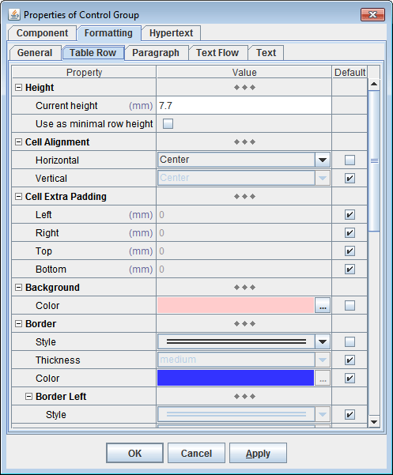
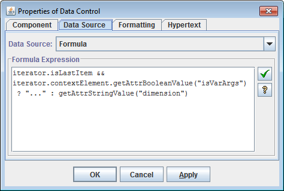
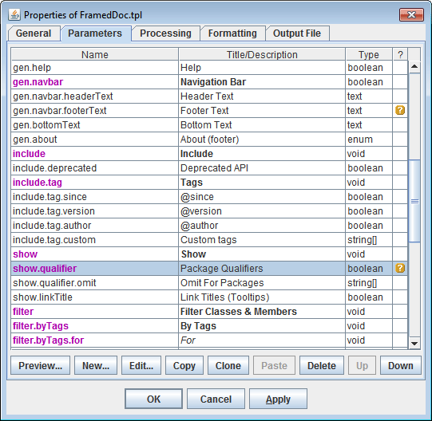
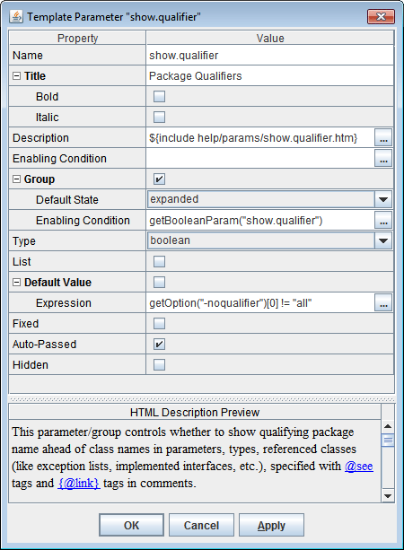
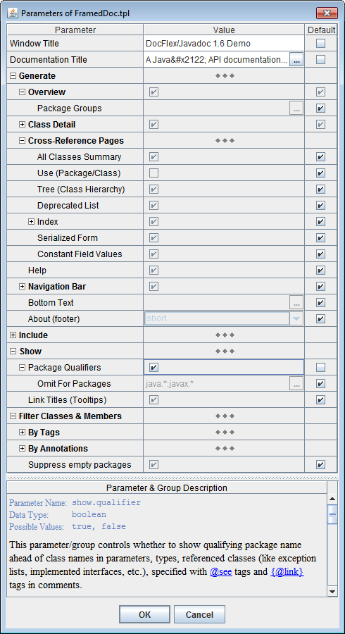
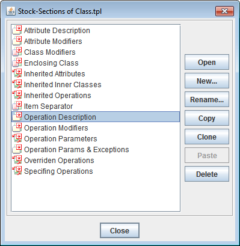

Location Paths, which are XPath-like expressions used in many settings within templates, can be selected using the special Location Path Chooser dialog:

DocFlex templates can be considered as a sort of computer programs, containing instructions interpreted by DocFlex Generator. Such instructions are specified in the form of template components.
Template components are the building blocks of templates and visualized in DocFlex Template Designer. Almost everything you can see on the following screenshot depicts some template components.
The interpretations of template components as well as their appearance in the Template Designer can be adjusted with component properties.
Most of the component properties are specified statically in templates using special Property Inspectors:

Some of the component properties, however, can be calculated dynamically depending on the data being processed. Such dynamic properties are specified using FlexQuery-expressions.
For programming convenience, all input fields for FlexQuery-expressions in the DocFlex Template Designer are implemented with the special Expression Editors supplied with the expression quick-check button:

and the button invoking the FlexQuery Expression Assistant Dialog:
which provides a lot of information about everything that can be used in the expression:
This information is always up-to-date as it is obtained mostly not from the static help files but collected dynamically from all available resources. Here, you can also select a necessary identifier and insert it directly into the edited expression.
- All available utility functions together with their descriptions
- The generator variables in the form of objects and properties of the Generator Object Model
- The template parameters
- All available Element Types and their attributes
Location Paths, which are XPath-like expressions used in many settings within templates, can be selected using the special Location Path Chooser dialog:
DocFlex provides elaborated methods to handle template parameters.
The following parameter types are supported:
Parameter Type Usage stringstring parameters numbernumeric parameters (both integer and float) booleanboolean parameters (to specify yes/no or true/false settings) enumstring parameters whose value can be selected only among specified strings
(e.g. "red", "yellow", "blue")textsame as stringtype, but allows to enter multiline textobjectthis type is intended mostly for internal use
(e.g. to program passing parameters between templates)In the Template Properties Dialog of any template, it is possible to declare a list of template parameters:

Each parameter declaration consists of
- parameter name
- description
- data type
- for the
enum-parameter, the list of the possible values- default value
- other settings

When starting the generator, the template parameters can be either specified in the Template Parameter Inspector dialog:

or passed programmatically, using DocFlex API.
Within templates, the values of passed parameters can be obtained in FlexQuery-expressions using
getParam()function.
The small repeatable fragments of a template can be designed only once and, then, be put into the special template part called Template Stock in the form of stock-sections.

Such stock-sections can be called many times from the different template's locations and even from within themselves.
Each stock-section call produces the same fragment of the output document as if the stock-section's content was in the place of its call. Stock-sections can be considered as an equivalent of procedures in a typical programming language.
For more information, see documentation: Template Components, Stock-Sections, Call Stock-Section.
DocFlex allows to call from one templates another templates (subtemplates). Each called subtemplate can produce either the separate document or a fragment of the common document being generated by the calling one. This allows
- having a set of specifically designed templates, to generate any number of logically connected documents, whose creation, names and locations can be controlled by the processed data. In particular, this allows to generate a framed (HTML) documentation.
- to create a library of subtemplates which can be reused many times by calling them from the different application templates. This may help to reduce the project development time as well as to simplify its further maintenance and modifications.
- to generate single (RTF) documents containing section with their own sets of page header/footer.
For more details, see documentation: Template Components | Call Template.